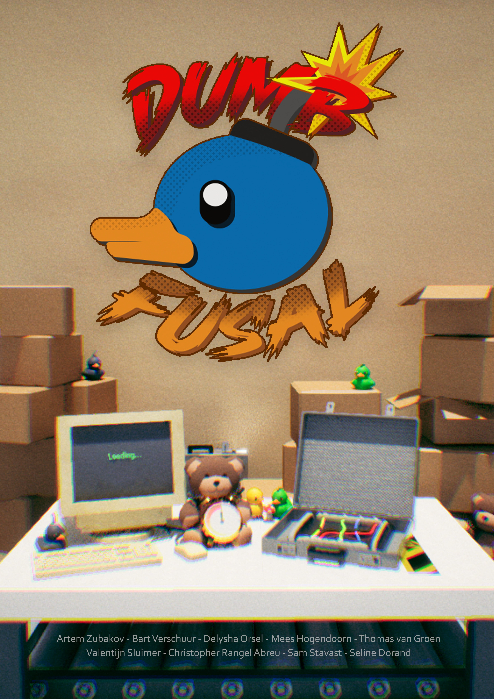
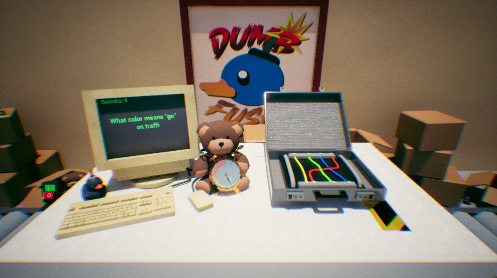

Dumbfusal
What is this project about?
Dumfusal is a puzzle game developed in Unreal Engine,
set in a mysterious factory. You play as a worker going through a normal day—until things suddenly take a dangerous turn.
Ordinary tasks turn into deadly traps, and bombs start appearing everywhere.
Your only way to survive is to defuse the bombs in time. Each puzzle challenges your reflexes, logic, and decision-making under pressure. Fail to defuse a bomb fast enough, and you explode.
The game combines tension, puzzle-solving, and dark humor into a fast-paced, immersive experienc
Project date: From November 2024 - February 2025
Project duration: 2 months.
Development Team: 9 people.
Engine: Unreal engine 5.4
Programming language: Blueprints

My role & contribution in this project.
I was a programmer for this project, my role was to create mechanics for our game. I made the Cut the wire puzzle , dont touch the button and i was the Scrum master/Projectleader .

In this mini-game, players choose between four colored wires based on a question shown on screen.
For example: "What color means 'go' in traffic?" The correct answer would be the green wire.
If the right wire is cut, the player moves on to the next puzzle. Choosing the wrong one ends the round. It's a quick,
interactive puzzle that combines simple logic with fast decision-making.

I created the "Don't Touch the Button" game. In this game, clicking the button causes a bomb to explode — but here's the twist: you actually do need to press the button!
The key is to watch the button closely. When it turns green, it's safe to press. So you have to keep your eyes on it, because you never know when the color will change. It’s all about timing, focus, and quick reactions. Can you press the button at the right moment and survive the challenge?
I created a randomizer system that makes every game unpredictable. Each wire is assigned a different, randomly selected question every time you play. That means every wire has its own unique challenge, and the correct one to cut changes with every round.
You can’t rely on memory or guesswork — you’ll need to read each question carefully, figure out the right answer, and cut the correct wire before time runs out. One wrong move, and it's game over.
It’s a fast-paced, high-stakes test of your logic, focus, and reflexes. No two games are ever the same — are you quick and clever enough to defuse the bomb?